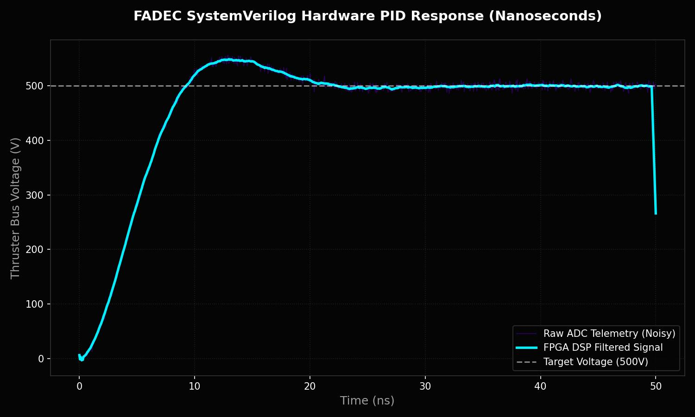
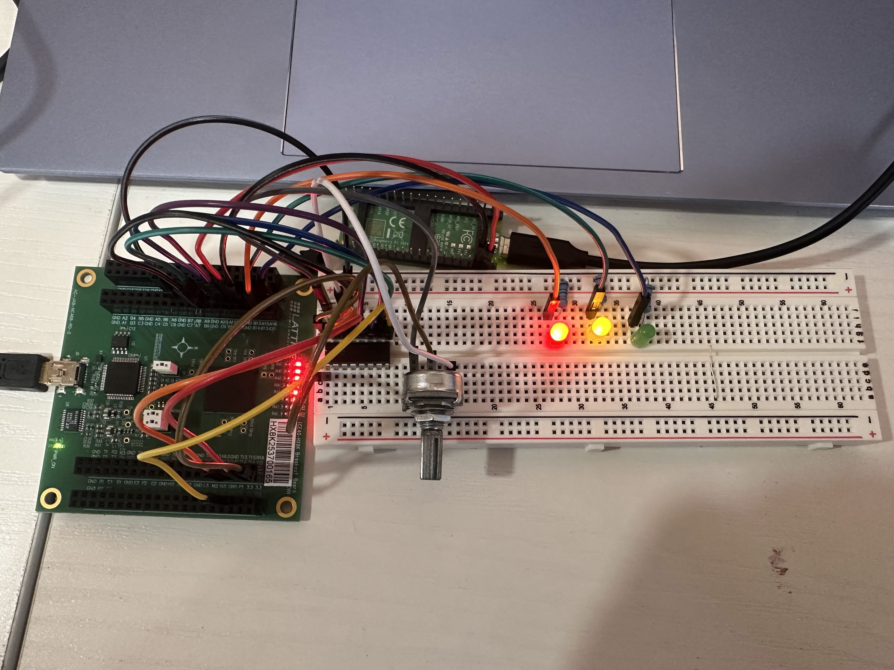

The Problem: Software Latency
While working with the PURPL space program on electric propulsion, I realized that relying on a traditional software-based microcontroller to run the engine control laws introduced severe latency. In high-voltage propulsion systems, milliseconds of delay can result in catastrophic electrical faults.
I initiated a personal project to design a purely hardware-based Full Authority Digital Engine Control (FADEC) system to prove that control loops could be executed in nanoseconds without an operating system.
Hardware Digital Signal Processing (DSP)
Because high-voltage thrusters generate massive electromagnetic interference (EMI), the raw telemetry coming from the analog sensors is incredibly noisy. If the FADEC reacted to the raw data, it would trigger false-positive emergency shutdowns.
To solve this, I designed a real-time Moving-Average Filter directly into the SystemVerilog RTL (`avg_filter.sv`). Instead of using expensive division operations that consume clock cycles, I utilized bit-shifting to divide the running sum by 8 with zero latency.
// Calculate instant average via bit-shifting
data_o = sum_q[14:3];
// Subtract oldest noise, add new telemetry, shift array
if (valid_i == 1'b1) begin
sum_d = sum_q - buffer_q[7] + data_i;
for (int i = 7; i > 0; i--) begin
buffer_d[i] = buffer_q[i-1];
end
buffer_d[0] = data_i;
valid_o = 1'b1;
endSystemVerilog FSM Architecture
The core logic of the FADEC is built around a complex Finite State Machine (FSM) that dictates engine states (Standby, Ignition, Steady-State, Shutdown). I engineered a custom SPI Master module in Verilog to constantly poll the external ADC chips, feeding the raw data through the DSP filter and directly into the combinational logic of the FSM.
Physical Hardware Integration & Bug Squashing
The crowning achievement of this project was migrating the simulation into the real physical world. I integrated a Lattice iCE40 FPGA, an MCP3208 12-bit ADC, and a Raspberry Pi Pico Ground Station.
During integration, I had to squash two massive hardware bugs. First, an SPI Timing Glitch where the ADC data was mangled due to shifting on both edges of the clock. I rewrote the FSM to strictly adhere to the SPI protocol (transmitting on the falling edge, sampling on the rising edge). Second, a UART Synchronization Glitch where the Pico read garbage bytes on FPGA boot. I solved this by writing a bulletproof mathematical synchronization filter in C.
The final system successfully reads live analog voltages over physical SPI pins, processes them through the DSP pipeline, and streams custom telemetry packets to the Pico at 115200 baud, perfectly mirroring physical LEDs to the FADEC states (Fuel Valve PWM, Alarm, Shutdown)!
View Source Code on GitHub
Final hardware integration: Lattice FPGA, ADC, LEDs, and Pico Ground Station.